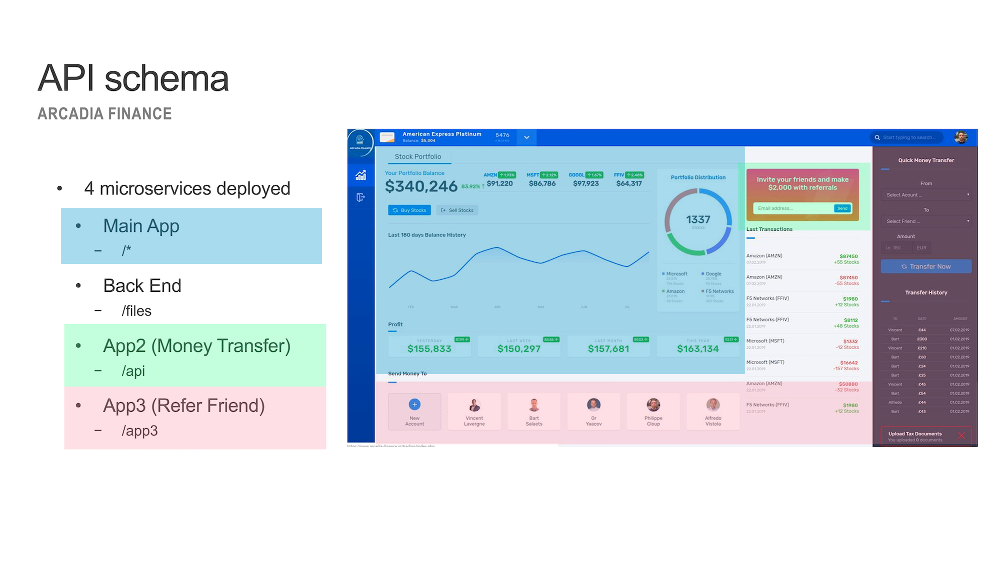

Architecture of Arcadia Application¶
Note
This application is available in GitLab in case you want to build your own lab :
First of all, it is important to understand how Arcadia app is split between micro-services
This is what Arcadia App looks like when the 4 microservices are up and running, and you can see how traffic is routed based on URI
But you can deploy Arcadia Step by Step
If you deploy only Main App and Back End services.

Note
You can see App2 (Money Transfer) and App3 (Refer Friend) are not available. There is dynamic content showing a WARNING instead of a 404 or blank frame.
If you deploy Main App, Back End and Money Tranfer services.
If you deploy Main App, Back End, Money Tranfer and Refer Friend services.